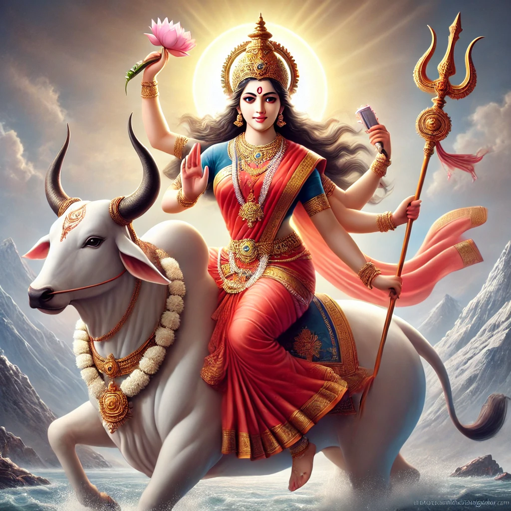
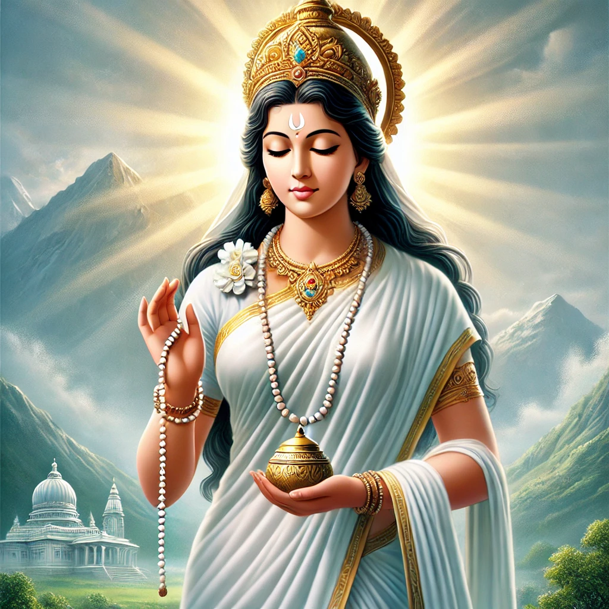
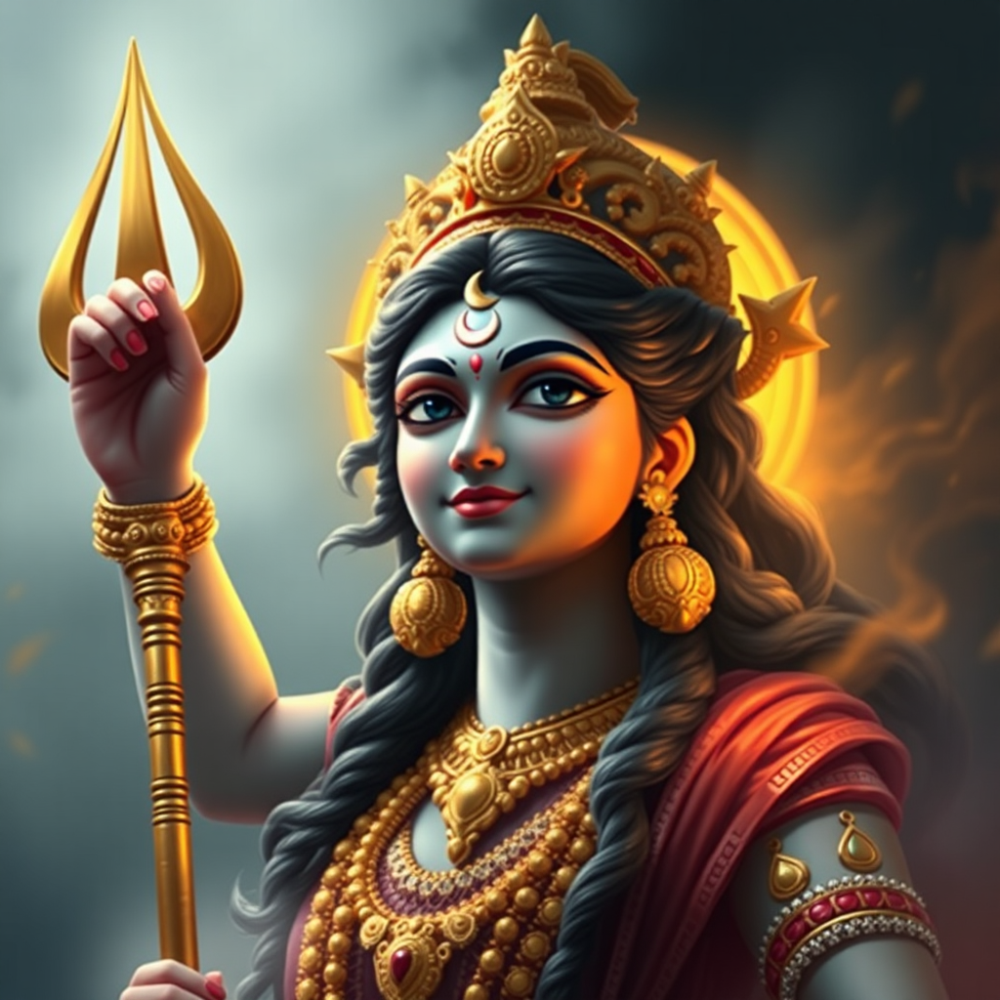
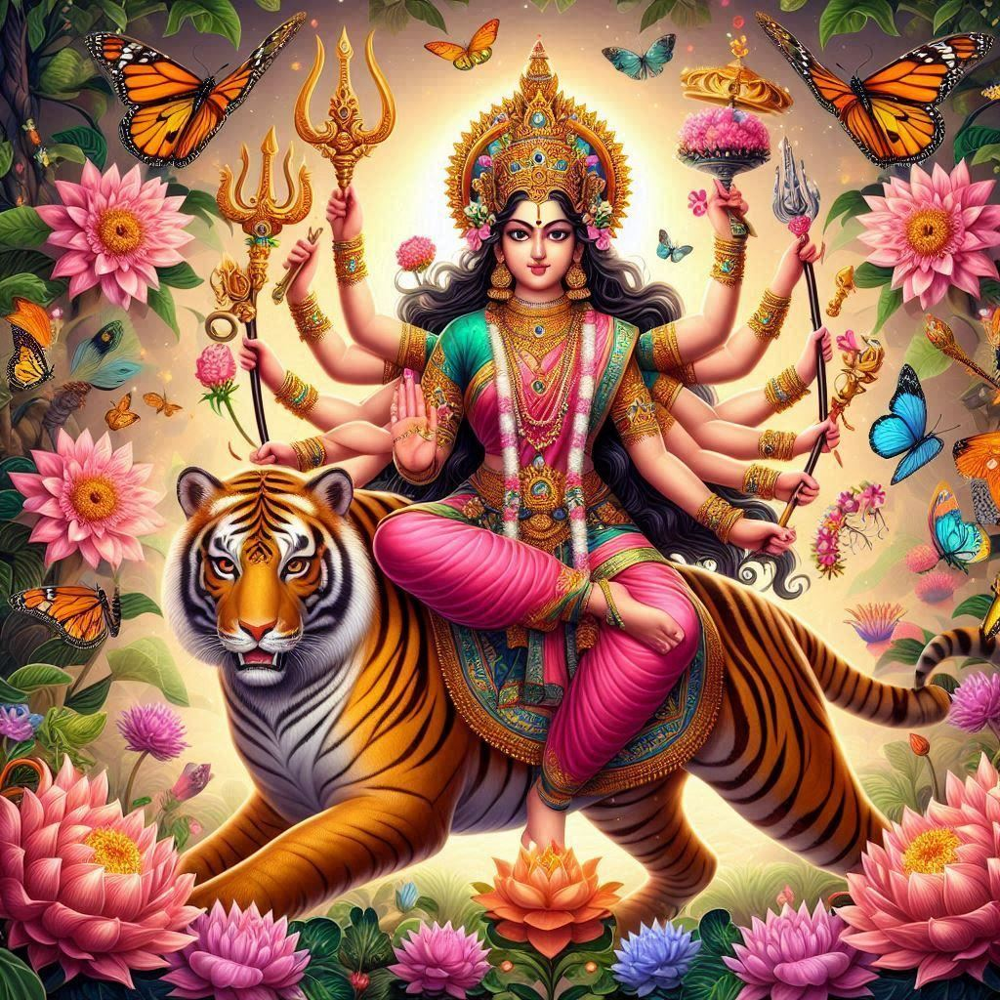

Day 1: Shailaputri
Shailaputri is the daughter of the mountains and the embodiment of strength. She rides a bull and holds a trident and lotus.
Puja Rituals: Devotees offer ghee and chant mantras dedicated to Shailaputri. White flowers are commonly used in the offering.
Cultural Significance: Celebrated with fervor in Himachal Pradesh, her connection to the mountains is deeply honored.
Day 2: Brahmacharini
Brahmacharini symbolizes penance and devotion. She holds a rosary and kamandalu, representing perseverance and calmness.
Puja Rituals: Sugar and fruits are offered. Devotees seek blessings for patience and strength.
Cultural Significance: In South India, devotees fast and recite hymns dedicated to her throughout the day.
Day 3: Chandraghanta
Chandraghanta is the third avatar of Devi, representing beauty and bravery. She is adorned with a crescent moon on her forehead, which gives her the name.
Puja Rituals: Devotees offer milk and sweets. This day is associated with seeking peace and bravery.
Cultural Significance: In North India, her valor is celebrated with processions, and devotees worship her to ward off evil spirits.
Day 4: Kushmanda
Kushmanda is believed to be the creator of the universe, bringing light to the dark cosmos. She rides a lion and is depicted with eight arms.
Puja Rituals: Devotees offer pumpkin as it is considered her favorite vegetable, symbolizing prosperity and health.
Cultural Significance: This day is celebrated with lights and diyas, symbolizing her role in bringing life to the universe.
Day 5: Skandamata
Skandamata, the mother of Lord Kartikeya (Skanda), symbolizes motherhood and the nurturing aspect of Devi. She rides a lion and holds baby Kartikeya in her lap.
Puja Rituals: Bananas are offered to seek blessings for good health and prosperity. Worshipping her is believed to bring peace and happiness.
Cultural Significance: In West Bengal, she is celebrated with immense devotion, especially by mothers seeking blessings for their children.
Day 6: Katyayani
Katyayani is the warrior goddess, often depicted with four arms, and rides a lion. She is revered as the goddess who destroys evil forces.
Puja Rituals: Devotees offer honey as a symbol of sweetness and seek blessings for protection from harm and obstacles.
Cultural Significance: In Gujarat, Katyayani is celebrated with Garba and Dandiya Raas dances, which represent the joy of victory over evil.
Day 7: Kalaratri
Kalaratri, the fiercest form of Devi, is depicted as dark-skinned and riding a donkey. She is known to destroy ignorance and remove darkness.
Puja Rituals: Devotees offer jaggery and seek her blessings to remove obstacles, fears, and evil forces from their lives.
Cultural Significance: In Maharashtra, Kalaratri is revered with all-night vigils, prayers, and devotional songs, honoring her fierce nature.
Day 8: Mahagauri
Mahagauri symbolizes purity and calmness. She is depicted as a radiant goddess with four arms, riding a bull.
Puja Rituals: Coconut and sweets are offered to seek blessings for purity of mind and a calm spirit.
Cultural Significance: In North India, the eighth day is celebrated as Ashtami, with young girls being worshipped as embodiments of Mahagauri.
Day 9: Siddhidatri
Siddhidatri is the goddess of accomplishment, bestowing wisdom and spiritual knowledge. She sits on a lotus and is surrounded by her devotees.
Puja Rituals: Sesame seeds are offered, and mantras are chanted to seek knowledge and success in all endeavors.
Cultural Significance: The final day of Navratri is marked by grand celebrations across India, with special prayers for success and prosperity.